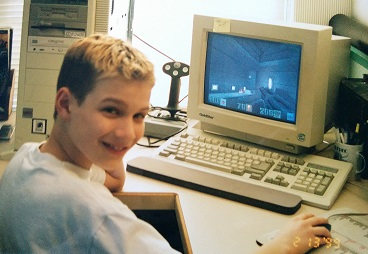
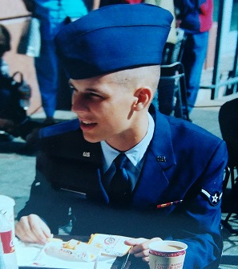
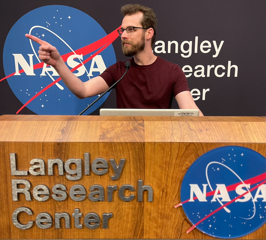

About Me
From an early age, I was always drawn to computers. The first computer I ever used required Windows (3.1) to be launched from DOS. So, I grew up when personal computing was really becoming mainstream. For me, it wasn’t just about playing games on them, I also spent a lot of time just looking around and exploring how they worked. This led to me being the go-to person for my family when it came to computer problems.
So, it’s probably not surprising that when I decided to enlist in the US Air Force Reserve after high school, I chose an IT-focused job. That was the beginning of my career in IT. The role was a combination of IT help desk, networking, and system administration. Since I was a reservist, I also had a civilian job working in IT. For most of my early career, I worked full time at Six Flags as an IT support technician, while doing my reserve duties one weekend a month and a few weeks of active duty a year all while working my way through a bachelors degree. After graduating, I knew I wanted to pursue a higher degree. When I got a job with Georgia Tech, I used the benefits to get my master’s degree without student loans.
Even though I spent so many years with computers on an operational level, my master’s degree was my first real exposure to software development. I immediately fell in love with programming, and I knew when I finished my degree, I needed to pivot my career to software. With my newfound passion, I turned my sights on another dream of mine: working for NASA and helping humanity get to the stars! My first real software job was with Viasat, and I truly loved being a part of space operations. The ground segment is where I found my niche, but when I had the opportunity to work more directly for NASA, I jumped at the chance. I have now been able to work on software used by NASA’s Scientific and Technical Information, Collin's Aerospace, and NASA's Mission Control Center! I am ambitious and will continue working hard to contribute in any way I can to help NASA achieve it’s goals! Ad Astra per Aspera
